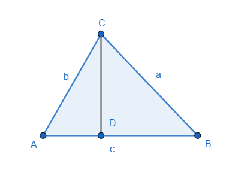
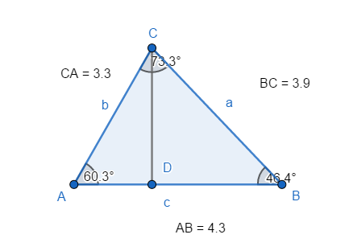

0x01 定义
余弦定理(law of cosines):
是描述三角形中三边长度与一个角的余弦值关系的数学定理

0x02 公式
已知△ABC中，AB=c，BC=a，AC=b，则有：
0x03 推导过程
在任意△ABC中
做AD⊥BC.
∠C所对的边为c,
∠B所对的边为b,
∠A所对的边为a
根据勾股定理：
0x04 程序实现

1 | import math |
输出结果：
angle A = 60.04661306603643
angle B = 47.149833002137065
angle C = 72.80355393182653
angle A + angle B + angle c = 180.0